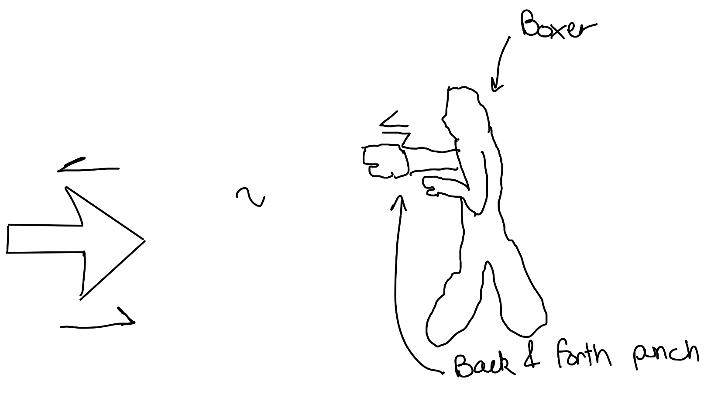
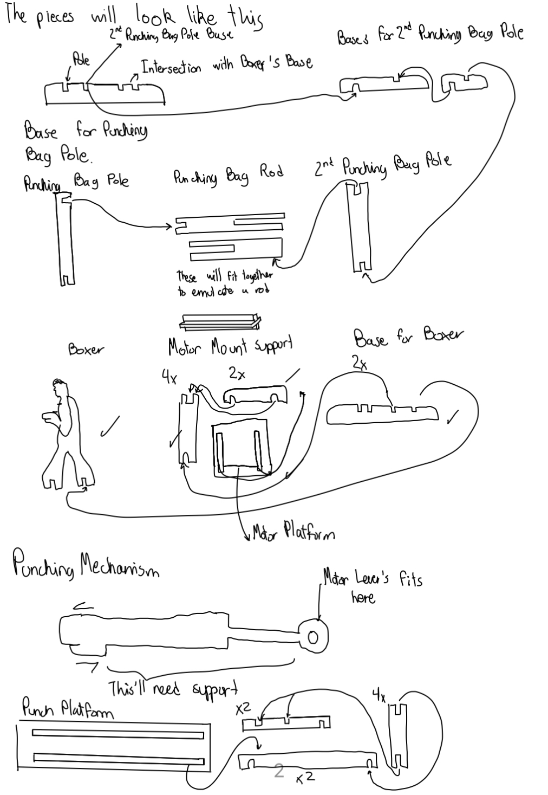

<div class="textcontainer">
<p class="margin"> </p>
<h3>Week 3: Kinetic Sculpture</h3>
<h4>Kinetic Sculpture</h4>
<h5>For this project, I wanted to develop something that I could use in my final project (bike turning signals system).
Therefore, I first sketched what type of motion I wanted to incorporate into my final project.
</h5>
<h5> I wanted to create a mechanism that would allow the arrow to move back and forth to be even more explicit in
terms of where I wanted to turn.</h5>
<br/>
<h5>However, a moving arrow wasn't the most artistic idea for my kinetic sculpture, and I wanted to use the opportunity
to explore my creativity. Therefore, I began thinking about other objects or systems that moved in the same way.
That is how I came up with the idea of creating a kinetic sculpture that mimics the motion of a boxer throwing punches.
</h5>

<h5> Having sketched it, i knew that the sculpture would require various levels since the punch mechanism would be elevated.
Consequently, I began sketching the different parts that I would need to create the sculpture.</h5>

<h5> I then began designing the parts in Fusion 360. I started with the base, and for the more complicated components (i.e. the boxer and the fist),
I used the spline tool to trace the shapes from online images.</h5>
<img src="" alt="sketch" width="400"/>
<h5> After designing all the parts, I laser cut them out of a 0.4mm cardboard. I designed the parts to be assembled without the
need of using hot glue to preserve the aesthetic of the sculpture. </h5>
<h4> Back & Forth's </h5>
<h5> Finally, I assembled the sculpture and added a motor to create the punching motion. I realized that the motor was heavier
than I had anticipated, so I added tape to fix and balance the weight.</h5>
<img src="tape.jpg" alt="sketch" width="400"/>
<h5> Additionally, I realized that my crank's hole that attached to the motor wasn't small enough. This could have been
due to the kerf and inherent irregularity of the laser cutting process. To fix this, instead of making it smaller, I
realized that it would be too difficult to get the exact measurement which would fit perfectly; moreover, it would
wear out and eventually become loose again. Therfore, I observed the board with the different motors that Nathan provided
and I noticed that one had a piece of tape around it. This gave me the ide of using tape to provide that extra
girth that was needed to make the crank fit tightly around the motor. </h5>
<video width="640" height="480" controls>
<source src="GirthTape.mp4" type="video/mp4">
</video>
<video width="640" height="480" controls>
<source src="mechanism.mp4" type="video/mp4">
</video>
<br/>
</h5> Another mistake I corrected was the design of the fist itself, since the motor not only went up but also down, it
required an outline that could withstand that motion. therefore, I redesigned the arm to allow for greater clearance
in the lower part, and avoid exposing the motor to excessive force. </h5>
<h5> This implied that the platform over which the fist moved required to be wider since this vertical allowance
also meant greater horizontal variation. I first just made the hole and the platform wider. But it ended up being too loose.
Thereefore, I redesigned it as follows: </h5>
<h5> Finally, I noticed that the horizontal allowance in the platform also required to be accounted for in the crank.
This led me to design a 'bolt' that would go through the link between the fist and the crank to ensure that the fist
would remain in place. </h5>
<h5> Overall, I am very happy with how the sculpture turned out. I managed to do something I find interesting and
that relates to me since I practiced boxing back in Mexico City. I think it is a fun and interesting piece that
showcases the potential of kinetic art. I also learned a lot about the design and fabrication process, now accepting
the back and forth as part of the process and not as a burden. I also learned how to solve problems quicklier. </h5>
<video width="640" height="480" controls>
<source src="final.mp4" type="video/mp4">
</video>
<h4>Key Takeaways</h4>
<h5>1. Things will go wrong, but it is not that hard to solve them.</h5>
<br/>
<h5>2. Movement implies to either make a really sturdy structure to ensure movement along a certain range, or to account
for variations that the movement will create.</h5>
<br/>
<h5>3. Creativity, engineering, and aesthetics are not mutually exclusive!</h5>